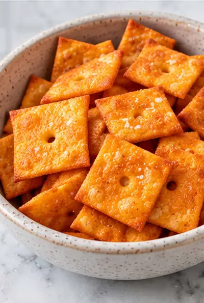

Homemade Cheez-Its Recipe (2 Ingredients)

Ingredients
- 6 slices ultra-thin sliced deli cheese (I use cheddar)
- salt, to taste
Steps
- Preheat the oven to 275°F and line a baking sheet with parchment paper.
- Cut each cheese slice into 4 smaller squares. Place them on the baking sheet about ¾ inch apart.
- Once the sheet is full, use a straw to cut a hole in the center of each square.
- Bake for 20 to 22 minutes.
- Remove the pan from the oven and sprinkle the crackers with salt. Gently blot them with paper towels to remove some of the grease.
- Let the crackers cool on the pan before removing them.
Recipe by Anjali Shah · The Picky Eater, from The Picky Eater. Saved here for personal use; the original has the full notes, tips and photos. Open original